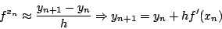
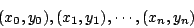
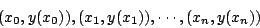
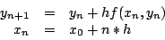

|
|
|
|
|Instituto Tecnológico de Costa Rica|Escuela de Matemática| M. Sc. Geovanni Figueroa M. |
|
|
Método de Euler
Una de las técnicas más simples para aproximar soluciones de una ecuación diferencial es el método de Euler, o de las rectas tangentes. Suponga que se desea aproximar la solución del problema de valor inicial
Observe en la figura 9 que la pendiente de la recta tangente
a la curva
siempre y cuando

Con lo cual podemos usar el punto

los cuales es de esperar que se encuentren cercanos a los puntos

Figura 9
Al sustituir el valor aproximado de la derivada 1.13 en la ecuación diferencial del problema de valor inicial 1.12 obtenemos el método de Euler

|